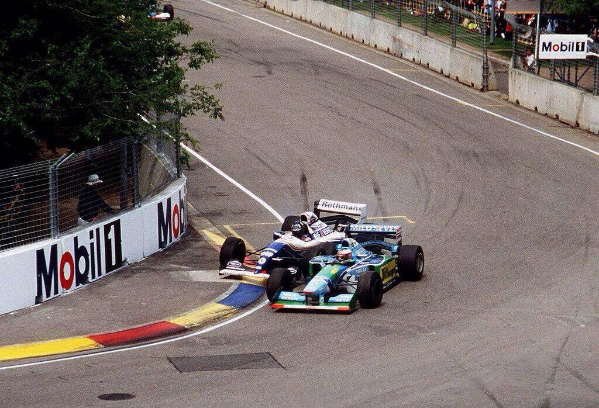

El primero del Kaiser
Nos remontamos a 1994 cuando el GP de Australia era el último de la temporada y se corria en Adelaide, en lugar del actual Albert Park de Melbourne en el cual se corre desde 1996.
Este año es uno con muchos sucesos importantes en la Formula 1 a lo largo del campeonato a raiz del Gran Premio de San Marino en el que hablaremos más adelante y a partir del cual Williams tuvo que poner todas sus esperanzas en el que hasta entonces era su segundo piloto, Damon Hill. A pesar del mal inicio de Williams ese año, acabaria llegando a la última carrera a un solo punto del Kaiser.
Schumacher tomo la punta y dejando atras al resto de competidores solo seguido por Hill desde la distancia. Y luego llegó la vuelta 35, que pasará a la historia de la F1. Schumacher no frenó en East Terrace, perdió la parte trasera de su Benetton, tuvo que girar en sentido contrario para controlarlo y se estrelló contra el muro.
Consiguió girar su coche, pero chocó por delante y por detrás antes de volver a la pista con un monoplaza visiblemente dañado. Fue entonces cuando Hill se movió hacia adentro en la siguiente curva, pero en reacción Schumacher se cerro a una velocidad bastante menor provocando un accidente en el que ambos pilotos acabarian abandonando y por consecuencia, el Kaiser ganaria su primer mundial sin estar exento de polemica.
